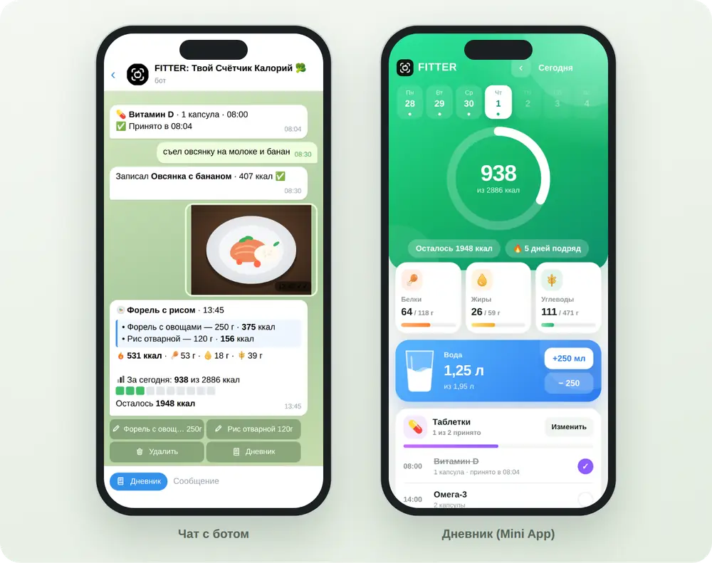

Lose weight without scales or spreadsheets. Just snap your food
Send a photo of your plate — in ~8 seconds FITTER finds the foods, estimates the portion, counts calories and macros and logs it in your diary. You just eat and see how much is left.
You don't give up on the goal. You give up on the routine
Counting calories is the most reliable way to manage weight. But in regular apps it's a second job, and most people give up within a week. FITTER takes the routine off your hands.
A regular tracker ~15 min a day
- Weigh every product on a kitchen scale
- Search for the dish among dozens of similar ones
- Add up portions by hand and recalculate macros
- Install a separate app and sign up
- Forget to log dinner — and quit within a week
With FITTER ~8 sec per meal
- One photo — the AI finds the foods and estimates the weight itself
- Or type it: “ate 2 eggs and toast”
- Daily summary and what's left of your goal — automatic
- Right in Telegram, which is always at hand anyway
- Reminders, streaks and awards — so you don't quit
that's how much manual counting takes at 15 minutes a day. With FITTER that time stays yours — for workouts, sleep or just life.
Three steps to your first entry
Less than a minute to start. After that — one photo per meal.
Answer 6 questions
Sex, age, height, weight, activity and goal. FITTER calculates your calorie and macro goal with the Mifflin–St Jeor formula.
Send a photo of your food
The AI recognizes every product, estimates the grams and counts the macros. A caption like “this is 200 g of rice” makes the estimate even more accurate.
Watch the result
The bot instantly shows how much is left until your goal. Daily and weekly summaries, water and weight — in a beautiful diary.
How much do you need to eat a day?
The same calculation FITTER does at the start. Fill it in and get your calorie and macro goal.
Everything for a food diary — in one chat
From logging lunch to the weekly review. Nothing to set up.
Log food the way that suits you
If the AI got it wrong, tap ✏️ and fix the weight or product — the macros are recalculated.
Personal goal
Calories and macros for your target. Log a new weight and the goal recalculates itself.
Water and reminders
30 ml per kg of body weight. The bot reminds you to drink — every 30 min to 2 hours, and stays quiet at night.
Weight and chart
History of measurements, the change since last time and a clear chart.
Pills and vitamins
A timely reminder with “Taken”, “In 30 min” and “Skip” buttons.
Streaks and awards
Days in a row and 13 achievements. You'll hate to skip a day.
Daily and weekly summaries
How much you ate, how much is left and where you went over — with a chart.
A beautiful diary, no download
Opens with a button right from the chat as a Telegram Mini App: calorie ring, week calendar, macro cards, a glass of water with ±250 ml buttons. Adapts to light and dark themes.

Open the diary ↗It doesn't just count — it advises
FITTER knows your goal and what you've already eaten. So its tips are about you, not a generic “eat more vegetables”.
3 options for your next meal based on the calories and protein you have left, the time of day and your goal. Like one? Log it with one button.
Every Sunday at 8 PM: a nutrition score, what went well and 3 tips for the next week.
“How much protein is in cottage cheese?” — an answer that takes your goal and what you've eaten today into account.
🥗 What to eat
610 kcal and 38 g protein left · dinnerLosing, maintaining or gaining
Lose weight
A calorie deficit without starving: you see where you went over, and the tips suggest filling options within what's left.
Start losing →Maintain weight
Calm control: days on goal, the weight chart and the weekly review help you stay on track.
Stay in shape →Gain muscle
Keep an eye on protein in every meal and reach your goal with “What to eat” suggestions.
Start gaining →No trial periods, no card required, no paid “premium” features. Open the bot and everything is already yours.
- Calories and macros from a photo, text, label or barcode
- Personal goal with automatic recalculation
- Diary as a Telegram Mini App
- AI assistant “What to eat” and weekly review
- Water, weight, vitamins, reminders
- Streaks, awards and weekly summaries
Your data is yours
A food diary is personal. That's why FITTER stores the minimum and sells nothing.
The picture goes to the AI only for recognition and isn't saved anywhere.
We don't sell data or add third-party counters. Details are in the privacy policy.
The whole service can be checked on GitHub.
Any entry can be edited or deleted, and all your data can be erased on request.
How do I count calories from a photo?
Open the FITTER bot in Telegram and send a photo of your dish. The AI recognizes the foods, estimates the portion weight and counts calories, protein, fat and carbs. The entry appears in your diary right away, where you can check and correct it.
How accurate is calorie counting from a photo?
A photo-based estimate is approximate and depends on the dish and the portion size. For better accuracy, add a caption to the photo (“200 g rice”) or fix the weight and product with the button under the entry. For packaged foods, the bot takes the values straight from the label. FITTER is not a substitute for advice from a doctor or dietitian.
How much does FITTER cost?
FITTER is currently free and ad-free. Open the bot in Telegram and start your diary.
Do I need to install an app?
No. FITTER works right inside Telegram, and the diary opens as a Telegram Mini App. No sign-up needed.
How does FITTER calculate my goal?
On first launch the bot asks 6 questions: sex, age, height, weight, activity and goal. Your calorie and macro goal is calculated with the Mifflin–St Jeor formula and recalculated whenever you log a new weight.
Can I correct a product or its weight?
Yes. Tap the product under the entry and enter the right weight, name or both, for example “trout 200 g”. Calories and macros are recalculated.
What about packaged foods?
Photograph the label — the bot copies the nutrition values exactly from it. If the label isn't visible, the bot reads the barcode and finds the product in the Open Food Facts database. You can also send the barcode digits as text.
Are there reminders to drink water?
Yes. Turn them on with the /remind command and pick an interval: 30 minutes, 1 hour, 1.5 hours or 2 hours. There are no reminders at night, and they stop once you reach your goal.
Are my photos stored?
No. The photo is passed to the AI only for recognition and is not stored. The diary keeps your profile and your food, water, weight and pill entries. You can delete your data at any time.
What's on your plate right now? Snap it and find out
Open FITTER, answer 6 questions and send your first photo. It's free.
Open @FitterFoodBot Free · No install · No ads